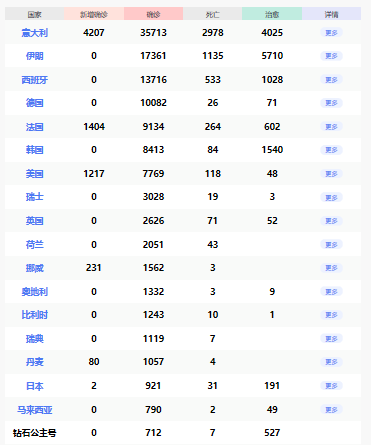

洛杉矶宣布进入紧急状态，意大利新增587例确诊
原文链接 备份链接 洛杉矶宣布进入紧急状态。来源：推特 （本文持续更新中。文中段首所示时间为本文更新时间。） 意大利 0800【新增587例确诊病例，累计确诊3089例】 根据当地时间3月4日18时意大利卫生部公布的最近数据，现有患 …

3月18日，意大利红十字会的工作人员为无家可归人员进行看护。来源：推特
“
全球新冠肺炎疫情播报，持续更新。
”
（本文持续更新中，点击左下角阅读原文可追踪最新进展。文中段首所示时间为本文更新时间。）
0800【全球疫情汇总】据新浪实时统计，截至3月19日8点，除中国（包括港澳台地区）以外，海外新冠肺炎累计确诊130132例，死亡5446例，治愈14378例。

注：新增0表示当天暂未宣布数据。数据来源：新浪
0800【世卫：全球新冠肺炎病例累计达到207860例】
世卫组织实时统计数据显示，截至欧洲中部时间18日18时（北京时间19日1时），全球新冠肺炎确诊病例累计达到207860例，死亡病例8657例，已报告病例的国家和地区达166个。
0800【世卫：仍有一些国家没有通报全部病例情况】
世界卫生组织东地中海区域办事处主任艾哈迈德·曼达里在会上表示，还有一些地区国家没有向世卫组织通报全部的病例情况。他再次强调了向世卫组织汇报确诊病例、疑似病例以及病例密切接触者的重要性。
0800【美国国会议员中出现首位新冠病毒感染者，系一名共和党众议员】
0800【一名华盛顿大学医学院病理学系教授死于新冠病毒感染】
0800【美国累计新冠肺炎确诊病例上升至7769例，死亡病例118例】
根据美国约翰斯·霍普金斯大学公布的全球实时疫情数据，截至北京时间19日早上7时30分，美国累计新冠肺炎确诊病例已达7769例，其中死亡病例上升至118例。
0800【纽交所受疫情影响将暂时关闭交易大厅】
0800【道指跌破20000点 抹去特朗普上任以来全部涨幅】
美股下跌，标普500指数跌幅扩大至7%，触发本月第四次熔断，美股暂停交易15分钟。
0800【加拿大各省感染新冠肺炎病例达648例 魁北克省出现首例死亡病例】
0800【意大利新增4207例 累计确诊病例35713例】
截至当地时间18日18点，意大利24小时新增新冠肺炎确诊病例4207例。累计确诊35713例，死亡2978例，治愈4025例。现有28710例确诊病例中，重症2257例，无症状居家隔离12090例。
0800【西班牙累计确诊13716例 宣布拿20%GDP应对疫情】
日新增新冠肺炎确诊病例2538例，累计598人死亡。宣布2000亿欧元援助计划缓解疫情影响（约合15500亿元人民币），该计划金额达西班牙国内生产总值20%，一半资金将用于企业信用担保，其余将用于援助弱势群体，为失业工人提供救济金，并允许受疫情影响群体暂停偿还抵押贷款。
0800【法国新冠肺炎确诊病例累计9134例】
累计死亡病例264例，一半危重病人年龄60岁以下。财政部长勒梅尔宣布，政府出台一项450亿欧元的专项基金“帮助法国经济和企业抵抗疫情”，并且为企业从银行贷款提供3000亿欧元的国家担保，还将采取一切措施支持大企业，包括“国有化”。
0800【法国派军机转运新冠肺炎患者 东部城市筹建野战医院】
0800【德国累计新冠肺炎确诊病例上升至12327例，死亡病例28例】
总理默克尔发表电视讲话，称德国正面临的形势非常严峻，号召全德人民团结起来，共同应对德国二战以来面临的最大挑战。
0800【英国新冠肺炎确诊者新增676人确诊总计2626人 71人死亡】
0800【伦敦证交所富时100指数再度大跌 英镑兑美元创35年来历史最低点】
0800【萄萄牙总统宣布进入国家紧急状态】
根据总统令，国家紧急状态将持续15天，可根据实际情况延长。紧急状态期间，与民生相关的行业如超市、药店等不会关闭。
0800【俄罗斯新增33例新冠肺炎确诊病例 累计147例】
0800【希腊新增新冠肺炎确诊病例31例 累计达418例】
0800【芬兰新增40例新冠肺炎病例 累计359例】
0800【荷兰新增346例新冠肺炎确诊病例 累计确诊2051例】
0800【捷克新增新冠肺炎确诊病例88例 累计确诊522例】
0800【斯里兰卡新冠肺炎累计确诊病例升至50例】
0800【新加坡新增47例新冠肺炎病例 创单日新高 防控升级】
新增病例当中，有33例境外输入病例，其中30人是在国外感染病毒的本地居民，曾到过欧洲、北美或东盟地区等。
0800【日本新冠肺炎确诊病例增至919例 死亡病例31例】
0800【澳大利亚新冠肺炎确诊病例上升至596例】
0800【巴西参议长及两名政府部长被确诊感染新冠病毒】
巴西官方18日宣布，巴西参议长阿尔科伦布雷以及总统府机构安全办公室部长级主任埃莱诺、矿产和能源部长阿尔布开克被确诊感染新冠病毒，目前三人均已居家隔离。
0800【巴西股市再次熔断】
当地时间3月18日下午，巴西股市跌至66961点，跌幅再次超过10%，触发熔断机制。这也是8天内该国股市第6次熔断。
0800【中国向伊拉克提供防疫物资援助】
3月16日，在伊拉克巴格达，中国专家组领队与巴格达医学城代表交接证书。中国专家组16日与巴格达医学城代表签署了防疫物资交接证书。中国红十字会总会此次向伊拉克捐赠了一套核酸检测实验室设备，包括两台PCR仪以及5万份核酸检测试剂。
0800【卢旺达20日起停飞所有商业航班以应对新冠肺炎疫情】
未经授权 禁止转载

原文链接 备份链接 洛杉矶宣布进入紧急状态。来源：推特 （本文持续更新中。文中段首所示时间为本文更新时间。） 意大利 0800【新增587例确诊病例，累计确诊3089例】 根据当地时间3月4日18时意大利卫生部公布的最近数据，现有患 …
原文链接 备份链接 记者：肖恩 “ 全球新冠肺炎疫情播报，持续更新。 ” （本文持续更新中，点击左下角阅读原文追踪最新进展。文中段首所示时间为本文更新时间。） 全球 0800【全球疫情汇总】据新浪实时统计，截至3月16日8点，除中国（包括 …
原文链接 备份链接 图片来源：Kyodo News “ 全球新冠肺炎疫情播报，持续更新。 ” （本文持续更新中，点击左下角阅读原文，实时跟踪国际疫情动态。文中段首所示时间为本文更新时间。） 全球 0800【全球新冠肺炎累计病例数已突破15 …
原文链接 备份链接 图片来源：Kyoto News “ 全球新冠肺炎疫情播报，持续更新。 ” 全球 0800【全球疫情汇总】 据新浪实时统计，截至3月9日8点，除中国（包括港澳台地区）以外，海外新冠肺炎累计确诊28854例，死亡702例， …
原文链接 备份链接 图片来源：Kyodo News （本文持续更新中。文中段首所示时间为本文更新时间。） 意大利 0800【意大利紧急封锁伦巴第大区及11个省】 法令将持续到4月3日。 0800【单日新增1247例意大利新冠肺炎确诊病例升 …